물류관리사-1교시 (2013-06-15 기출문제)
1과목: 물류관리론
1. 물류의 기본적 기능으로 볼 수 없는 것은?
- 생산과 소비 간의 장소 격차 조정
- 생산자와 소비자 간의 소득 격차 조정
- 생산단위와 소비단위의 수량 불일치 조정
- 생산과 소비 시기의 시간 격차 조정
- 생산자와 소비자 간의 품질 격차 조정
(정답률: 54%)

2. 물류의 영역적 분류에 관한 설명으로 옳은 것은?
- 조달물류 : 생산된 완제품 또는 매입한 상품을 판매창고에 보관하고 소비자에게 전달하는 물류활동
- 반품물류 : 원자재와 제품의 포장재 및 수배송 용기 등의 폐기물을 처분하기 위한 물류활동
- 사내물류 : 물자가 조달처로부터 운송되어 보관창고에 입고되어 생산공정에 투입되기 직전까지의 물류활동
- 회수물류 : 제품이나 상품의 판매물류 이후에 발생하는 물류용기의 재사용, 재활용 등을 위한 물류활동
- 판매물류 : 매입물자의 보관창고에서 완제품 등의 생산을 위한 장소까지의 물류활동
(정답률: 74%)
3. ECR(Efficient Consumer Response)의 주요 전략요소에 해당되지 않는 것은?
- 효율적인 반품 관리
- 효율적인 매장 진열 관리
- 효율적인 재고 보충
- 효율적인 판매 촉진
- 효율적인 신제품 도입 및 소개
(정답률: 39%)
4. 기업의 통합물류운영관점에서 재고거점 수가 증가할 경우 옳지 않은 것은?
- 배송비 감소
- 재고유지비용 증가
- 총 물류비용 감소
- 시설투자비 증가
- 고객서비스 수준 향상
(정답률: 48%)
5. 물류서비스에 관한 설명으로 옳지 않은 것은?
- 물류서비스와 물류비용 사이에는 상충관계(Trade - Off)가 존재한다.
- 서비스 수준의 향상에 따라 총매출이 증가하므로 이익을 최대화하기 위해서 서비스 수준을 높이는 것이 중요하다.
- 전자상거래의 확산으로 유통배송단계가 점점 줄어 들고, 고객맞춤형 물류서비스가 강조되고 있다.
- 물류관리자는 이익 창출을 위해 비용 절감과 물류서비스의 향상에 주력한다.
- 물류서비스 향상을 효율적으로 실행하기 위해서는 3S1L원칙과 7R원칙을 고려해야 한다.
(정답률: 80%)
6. 기업경영상 물류에 대한 관심이 높아지는 요인에 대한 설명으로 옳지 않은 것은?
- 생산과 판매의 국제화로 물류관리의 복잡성 증대
- 수발주 단위의 소량ㆍ다빈도화에 대한 대응 필요성 증가
- 저렴하고 양질의 서비스 제공을 위한 운송규제 강화 추세
- 운송보안에 대한 서류 및 절차 강화로 추가비용발생
- 시장환경 변화에 유연하게 대응할 수 있는 재고관리의 필요성 증대
(정답률: 54%)
7. 공급사슬의 활동을 계획, 구매, 제조, 배송, 반품의 범주로 구분하여 활동 주체들의 업무프로세스 연계 정도를 분석하는 것은?
- BSC(Balanced Score Card)
- SCOR(Supply Chain Operations Reference)
- TQM(Total Quality Management)
- EVA(Economic Value Added)
- CMI(Co-Managed Inventory)
(정답률: 50%)
8. 파렛트 사용 장점에 해당되지 않는 것은?
- 하역 및 작업능률 향상
- 물품보호 효과
- 재고조사 편의성 제공
- 좁은 통로에서도 사용 용이
- 상하차 작업시간 단축으로 트럭의 운행효율 향상
(정답률: 69%)
9. 다음의 총비용분석에 관한 설명으로 옳은 것만을 고른 것은?
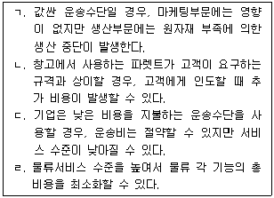
- ㄱ, ㄴ
- ㄱ, ㄹ
- ㄴ, ㄷ
- ㄴ, ㄹ
- ㄷ, ㄹ
(정답률: 58%)
10. 수요의 정성적 예측기법으로 전문가들을 한자리에 모으지 않고 일련의 질의서를 통해 각자의 의견을 취합하여 중기 또는 장기 수요의 종합적인 예측결과를 도출해 내는 기법은?
- 시장조사법
- 전문가 의견법
- 판매원 의견 통합법
- 자료유추법
- 델파이법
(정답률: 58%)
11. 물류와 생산 및 마케팅의 관계를 설명한 것으로 옳지 않은 것은?
- 물류는 마케팅의 4P 중 제품(Product)과 가장 밀접한 관련이 있다.
- 기술혁신으로 품질과 가격 면에서 평준화가 이루어진 상태에서는 고객서비스가 마케팅과 물류에서 중요한 비중을 차지한다.
- 물류는 포괄적인 마케팅에 포함되면서 물류자체의 마케팅활동을 실천해야 한다.
- 최근의 물류는 마케팅뿐만 아니라 산업공학적인 측면, 무역학적인 측면 등 보다 광범위한 개념으로 확대되고 있다.
- 생산과 물류의 상호작용에 포함되는 요소로는 공장입지, 구매계획, 제품생산계획 등이 있다.
(정답률: 67%)
12. 물류관리전략에 관한 일반적인 설명으로 옳은 것은?
- 일, 주단위의 업무운영에 관한 구체적인 사항을 수립하는 것이 전술적 계획이다.
- 배송빈도가 높을수록 물류센터의 재고 회전율은 감소한다.
- 고객맞춤형 제품의 경우, 유통과정에서 완성하기 보다는 공장에서부터 완성된 형태로 출하하는 것이 재고부담을 줄이는 좋은 방법이다.
- 상물(商物)을 분리함으로써 배송차량의 효율적 운행이 가능하고, 트럭 적재율도 향상된다.
- 운영적 계획과 전술적 계획을 미리 수립한 후 전략적 계획을 수립하는 것은 탑다운(Top-Down)방식이다.
(정답률: 59%)
13. 매트릭스형 조직의 특징에 관한 설명으로 옳지 않은 것은?
- 항공우주산업과 같은 첨단기술분야에 효과적이다.
- 물류를 하나의 프로그램으로 보고 기업 전체가 물류관리에 참여하는 조직유형이다.
- 명령, 지시계통인 라인의 흐름이 정체될 수 있다.
- 물류담당자들이 평상시에는 자기부서에서 근무하다가 필요시 해당부서의 인원들과 함께 문제를 해결하기 위해 구성된 조직이다.
- 기능형과 프로그램형의 중간형태이다.
(정답률: 36%)
14. 제약이론(TOC)에 관한 설명으로 옳지 않은 것은?
- 이스라엘의 골드랫이 제안
- SCM에 응용 가능
- 납기준수율 향상
- 병목공정을 집중관리
- 성과보다는 프로세스 개선이 목표
(정답률: 57%)
15. 유통경로의 역할에 대한 설명으로 옳지 않은 것은?
- 거래의 효율성 증대
- 제품 구색의 불일치 조정
- 거래의 정형화
- 상품 및 시장정보 제공
- 중간상의 재고부담 감소
(정답률: 47%)
16. 공급사슬 시스템전략에 관한 설명으로 ( )안에 들어갈 내용으로 옳은 것은?
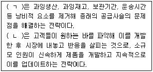
- ㄱ : 린(Lean)생산방식, ㄴ : 예측생산(MTS)방식
- ㄱ : 린(Lean)생산방식, ㄴ : 애자일(Agile)생산방식
- ㄱ : 지속보충(CRP)방식, ㄴ : 신속대응(QR)방식
- ㄱ : 지속보충(CRP)방식, ㄴ : 예측생산(MTS)방식
- ㄱ : 신속대응(QR)방식, ㄴ : 애자일(Agile)생산방식
(정답률: 54%)
17. 물류시스템 설계시 일반적으로 고려해야 할 사항으로 옳지 않은 것은?
- 배송차량의 대형화와 화물의 혼적을 통해 서비스 수준은 개선되지만 물류비용은 증가한다.
- 대고객서비스 수준을 중요하게 고려한다.
- 고객의 수요에 따라 재고수준이 결정되고, 이는 운송수단과 경로결정에 영향을 미친다.
- 물류정보시스템 구축을 통해 물류비용의 감소와 서비스 수준 개선을 달성할 수 있다.
- 고객서비스 관점에서 미배송 잔량을 체크하여 주문충족의 완전성을 확보해야 한다.
(정답률: 82%)
18. 다음은 경제적주문량(Economic Order Quantity)모형을 이용한 상품 A의 재고관리에 관한 내용이다. 상품 A의 연간재고부담이자는? (단, √36 = 6)
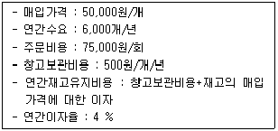
- 2,500원
- 600,000원
- 1,200,000원
- 12,000,000원
- 15,000,000원
(정답률: 24%)
19. 일반기준에 의한 물류비 계산방식에 관한 설명으로 옳지 않은 것은?
- 물류비의 인식기준은 원가계산준칙에서 일반적으로 채택하고 있는 발생기준을 준거로 한다.
- 시설부담이자와 재고부담이자에 대해서는 기회원가의 개념을 적용한다.
- 물류비의 계산은 먼저 관리항목별 계산을 수행한 후 비목별 계산을 수행한다.
- 자가물류비는 자사 설비나 인력을 사용하여 물류활동을 수행함으로써 소비되는 비용으로 재료비, 노무비, 경비 등이 포함된다.
- 관리항목별 계산은 조직별, 지역별, 고객별, 활동별로 물류비를 집계하는 것이다.
(정답률: 32%)
20. 활동기준원가계산(Activity-Based Costing)에 관한 설명으로 옳지 않은 것은?
- 업무를 활동 단위로 세분하여 원가를 산출하는 방법이다.
- 활동별로 원가를 분석하여 낭비요인이 있는 물류 업무영역을 알 수 있다.
- 노무비, 재료비 및 경비로 나누어 계산한다.
- 산정원가를 바탕으로 원가유발 요인분석이나 성과 측정을 할 수 있다.
- 물류서비스별, 활동별, 유통경로별, 고객별, 프로세스별 수익성을 분석할 수 있다.
(정답률: 44%)
21. 간이기준에 의한 물류비 산정방식에 관한 설명으로 옳은 것은?
- 영역별, 관리항목별, 조업도별로만 간단하게 구분하고 있다.
- 원가회계방식에 의한 원가자료로부터 실적물류비를 발생요인별로 계산한다.
- 실적물류비는 현재까지 물류활동에 투입된 비용을 말한다.
- 기업물류비 산정지침(국토해양부 고시, 2009년)에 의해 리버스물류비가 관리항목별 분류에 포함되었다.
- 제조원가 명세서 및 손익계산서의 계정항목별로 물류비를 추계하여 계산한다.
(정답률: 14%)
22. 다음은 무엇에 대한 설명인가?
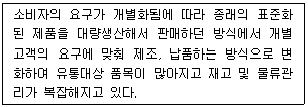
- 대량고객화(Mass Customization)
- 공급자재고관리(Vendor Managed Inventory)
- 시장실험(Test Marketing)
- 판매시점관리(Point of Sales)
- 신속대응(Quick Response)
(정답률: 37%)
23. 특정상품계열에 대하여 전문점과 같이 다양하고 풍부한 구색을 갖추고 낮은 가격에 판매하는 소매형태는?
- 카테고리 킬러
- 할인점
- 하이퍼마켓
- 기업형 슈퍼(SSM)
- 아울렛
(정답률: 69%)
24. 물류센터의 랙(Rack)이나 보관 장소에 점등장치를 설치하여 출고할 물품의 보관구역과 출고수량을 알려주고, 출고가 완료되면 신호가 꺼져 작업이 완료 되었음을 자동으로 알려주는 시스템은?
- DPS(Digital Picking System)
- DAS(Digital Assort System)
- PAS(Picking and Assorting System)
- ULS(Unit Load System)
- PPS(Pallet Pool System)
(정답률: 69%)
25. 물류공동화를 위한 전제조건에 해당되지 않는 것은?
- 자사의 물류시스템과 외부의 물류시스템과의 연계가 필요하다.
- 표준물류심벌 및 업체 통일전표, 외부와의 교환이 가능한 파렛트 등 물류용기를 사용하여야 한다.
- 서비스 내용을 명확하게 하고 표준화시켜야 한다.
- 통일된 기준에 근거하여 물류비를 명확하게 산정하고 체계화해야 한다.
- 단일 화주와 복수의 물류업체가 참여하여야 한다.
(정답률: 69%)
26. 다음은 월별 철강수요 자료이다. 지수평활법에 따라 5월에 예측되는 철강수요는? (단, 평활상수 α는 0.4로 한다.)(단위 : 톤)
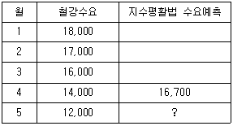
- 13,880
- 14,820
- 15,080
- 15,620
- 16,420
(정답률: 42%)
27. RFID(Radio Frequency Identification)에 관한 설명으로 옳지 않은 것은?
- 판독기를 이용하여 태그(Tag)에 기록된 정보를 판독하는 무선주파수인식기술이다.
- 바코드와는 달리 제품의 원산지 및 중간이동과정 등 다량의 데이터를 저장할 수 있다.
- RFID시스템은 리더기, 태그 등의 요소로 구성된다.
- RFID는 주파수대역에 따라 다양한 분야에 응용될 수 있다.
- 능동형(Active) 태그는 배터리 없이 근거리통신에 사용한다.
(정답률: 50%)
28. 물류정보시스템에 대한 설명으로 옳지 않은 것은?
- EAN 코드에는 대표적으로 EAN-13형과 EAN-8형이 있다.
- 물류정보시스템의 구축에는 상품 코드의 표준화가 선행되어야 한다.
- POS는 판매시점에 발생하는 정보를 수집한다.
- EDI는 제한되고 지리적으로 인접한 영역 내에 설치된 고속통신망이다.
- CVO는 화물 및 화물차량에 대한 위치를 실시간으로 추적관리할 수 있다.
(정답률: 69%)
29. 물류관리의 전략적 중요성에 관한 설명으로 옳지 않은 것은?
- 기업의 물류관리는 구매, 생산, 영업 등의 활동과 상호 밀접하다.
- 다품종 소량시대의 도래로 물류비용이 증가하여 효율적인 물류관리 수단이 필요하다.
- 최근 물류관리의 목표는 부가가치의 창출에서 단순비용절감으로 전환해 가고 있다.
- 물류의 통합이 기업의 경계를 넘어 공급사슬관리 전체로 확대됨에 따라 데이터와 프로세스 표준화가 필요하다.
- 전체적 효율화 및 부문간 유기적인 결합을 위한 물류정보시스템 구축이 필요하다.
(정답률: 53%)
30. 최종 고객으로부터 공급망의 상류로 갈수록 판매예측정보가 왜곡되는 현상(Bullwhip Effect)이 심화되어 가고 있다. 이에 대한 대처방안으로 옳지 않은 것은?
- 불확실성 최소화
- 리드타임 단축
- 전략적 파트너십
- 규모의 경제 추구
- 수요 변동 최소화
(정답률: 73%)
31. 최근 글로벌 물류환경변화에 해당되지 않는 것은?
- 국제물류수요의 증가
- 물류기업의 M&A 및 전략적 제휴 확산
- 인터넷, 모바일, RFID 등 IT기술의 급격한 발전
- 기업간 경쟁으로 물류아웃소싱 감소
- 유엔 기후변화협약 '발리로드맵' 채택에 따른 친환경 물류활동 증가
(정답률: 67%)
32. 컨테이너화(Containerization)의 장점이 아닌 것은?
- 대량 취급 용이로 물류효율 향상
- 화물흐름의 신속화
- 컨테이너 회수 및 보관장소 관리 용이
- 복합 및 연계운송의 활성화
- 물류표준화 및 효율화에 기여
(정답률: 54%)
33. 물류표준화에 관한 설명으로 옳은 것은?
- 기업마다 고유한 규격의 물류기기와 설비를 활용해야 한다.
- 포장의 표준화를 위해서는 강도표준화에 앞서 치수표준화가 이루어져야 한다.
- 국가차원의 표준화는 개별 기업의 표준화가 정착된 이후에 시행하는 것이 바람직하다.
- 화물이 규격화되어 효율적 일관운송이 어렵다.
- 우리나라의 표준 파렛트인 T-11의 규격은 1,200mm × 1,000 mm이다.
(정답률: 34%)
34. 물류 아웃소싱(Outsourcing)에 관한 설명으로 옳지 않은 것은?
- 물류활동을 효율화하기 위해 물류기능을 외부의 전문업체에 위탁하는 것이다.
- 기업 핵심정보의 유출가능성이 있으며 사내에 물류전문지식의 축적이 어려울 수 있다.
- 유연성이 있는 고용형태와 급여체계 실현이 가능하다.
- 주요 대상영역은 주문접수 및 처리, 고객서비스관리, 재고관리 분야이다.
- 고객불만에 대한 신속한 대처능력이 저하될 수 있다.
(정답률: 27%)
35. 물류보안 관련 제도에 관한 설명으로 옳지 않은 것은?
- CSI(Container Security Initiative) : 외국항만에 미국 세관원을 파견하여 미국으로 수출할 컨테이너화물에 대한 위험도를 사전에 평가하는 컨테이너보안협정
- C-TPAT : 미국 세관(국경안전청)이 도입한 반테러민관 파트너십 제도
- ISO 14001 : 여러 국가의 물류 보안 제도를 수용ㆍ준수하는 보안경영시스템이 갖추어 있음을 인증하는 제도
- ISPS Code : 각국 정부와 항만관리당국, 선사들이갖춰야 할 보안 관련 조건들을 명시하고, 보안사고예방에 대한 가이드라인 제시
- ISF(Importer Security Filing) : 선적지에서 출항 24시간 전, 미국 세관에 온라인으로 신고를 하도록 한 제도
(정답률: 50%)
36. 출판물 및 문헌정보 유통의 효율화를 위하여 국제적으로 표준화된 방법으로 고유번호를 부여하여 각종 도서의 일정한 위치에 표시하는 것은?
- ISBN
- SSCC
- ISDN
- UCC
- QR Code
(정답률: 50%)
37. 공동수배송 도입에 따른 기대효과가 아닌 것은?
- 차량의 적재효율 향상
- 주변의 교통혼잡 완화
- 차량의 운행효율 향상
- 화물량의 안정적인 확보
- 대형화물차에 의한 배송 폐지
(정답률: 65%)
38. 녹색물류와 관련된 설명으로 옳지 않은 것은?
- 온실가스 배출량을 감소시키는 방안이다.
- QR, ECR과 같은 혁신기법은 환경문제의 주요 해결방안이 된다.
- 지구온난화 등 환경문제가 세계적으로 대두되면서 물류분야도 대처방안 수립의 중요성이 높아지고 있다.
- 포장상자, 배출가스 등 환경에 미치는 영향을 최소화시키는 방안이다.
- 환경보전을 위한 포장에는 감량화(Reduce), 재사용(Reuse), 재활용(Recycle)이 중요시 되고 있다.
(정답률: 67%)
39. 물류공동화 추진상의 문제점이 아닌 것은?
- 물류비 절감에 따른 소비자가의 하락
- 배송 순서 조절의 어려움 발생
- 물류 서비스 차별화의 한계
- 매출, 고객명단 등 기업 비밀 노출 우려
- 비용 배분에 대한 분쟁 발생
(정답률: 69%)
40. SCM의 응용기법에 관한 설명으로 옳은 것은?
- CRP(Continuous Replenishment Program)는 물류센터에 재고를 보관하지 않고 바로 거래처로 배송하는 것이다.
- CAO(Computer Assisted Ordering)는 소비자의 구매형태를 근거로 상품을 그룹화하여 관리하는 것이다.
- ERP(Enterprise Resource Planning)는 제조-유통업체가 공동으로 생산계획, 수요예측, 재고보충을 구현하는 것이다.
- 크로스도킹(Cross Docking)은 기업 내의 자원을 효율적으로 관리하기 위한 통합정보시스템이다.
- VMI(Vendor Managed Inventory)는 공급자가 유통매장의 재고를 주도적으로 관리하는 것이다.
(정답률: 63%)
2과목: 화물수송론
41. 운송수단의 선택에 영향을 미치는 요인으로 옳지 않은 것은?
- 제품의 가치
- 제품의 안전성
- 운송거리
- 제품의 품질
- 제품의 종류
(정답률: 60%)
42. 선박에 대한 관세, 등록세, 소득세, 도선료, 각종 검사료와 세금 및 수수료의 산정 기준이 되며 선박의 크기를 나타낼 때 가장 일반적으로 사용하는 선박 톤수는?
- 총톤수(gross tonnage)
- 순톤수(net tonnage)
- 재화중량톤수(dead weight tonnage)
- 배수톤수(displacement tonnage)
- 재화용적톤수(measurement tonnage)
(정답률: 57%)
43. 화물자동차 적재관리시스템(Vanning Management System)과 관련된 내용이 아닌 것은?
- 적재계획은 운송화물의 중량과 부피 중 하나를 고려한다.
- 다양한 차량을 이용할 수 있을 때에는 가장 적절한 규모의 차량을 이용한다.
- 축중 제한을 초과하지 않도록 전체적인 적재화물의 중량을 통제한다.
- 주문관리시스템(Order Management System)과 연동되는 것이 효율적이다.
- 편하중에 의한 축중 제한이 발생하지 않도록 적재위치를 고려한다.
(정답률: 53%)
44. 기존의 도로(공로) 중심의 운송체계를 철도 및 연안운송 등으로 전환하는 것을 뜻하는 용어는?
- 3PL(3rd Party Logistics)
- ITS(Intelligent Transport System)
- 통합물류서비스(Integrated Logistics Service)
- 모달쉬프트(Modal Shift)
- LCL(Less than Container Load)
(정답률: 60%)
45. 해상운송의 요율을 결정하는 요소가 아닌 것은?
- 화물의 종류
- 화물의 중량 및 용적
- 화물의 운송거리
- 화물의 포장디자인
- 화물의 가치
(정답률: 57%)
46. 운송수단별 특징에 관한 설명으로 옳은 것은?
- 항공운송과 파이프라인운송은 화물의 종류에 제약을 받지 않는다.
- 철도운송과 도로운송은 중량의 제한을 받지 않는다.
- 항공운송과 도로운송은 장거리운송에 적합하다.
- 도로운송과 항공운송은 소ㆍ중량 화물운송에 적합하다.
- 해상운송과 철도운송은 기후의 영향을 받지 않는다.
(정답률: 63%)
47. 해상운송을 타 운송수단과 비교한 것으로 옳지 않은 것은?
- 대량화물의 장거리 운송에 적합하다.
- 화물의 용적 및 중량에 대한 제한이 적다.
- 항공운송에 비해 운임이 저렴하다.
- 타 운송수단에 비해 운송속도가 느리다.
- 도로운송에 비해 운송의 완결성이 높다.
(정답률: 59%)
48. 화물자동차 운임 결정에 영향을 주는 요소에 관한 설명으로 옳지 않은 것은?
- 화물의 취급이 어려울수록 운임은 증가한다.
- 밀도가 높은 화물은 동일한 용적을 갖는 적재용기에 많이 적재하게 되어 밀도가 높을수록 단위 무게당 운임은 증가한다.
- 한 번에 운송되는 화물의 단위가 클수록 대형차량을 이용하게 되며, 이 때 단위 당 부담하는 고정비 및 일반관리비는 감소한다.
- 적재율이 떨어지면 운송량이 적어져 단위 당 운임은 증가한다.
- 운송화물의 파손, 분실, 부패, 폭발 등 사고발생 가능성에 따라 운임은 변동된다.
(정답률: 62%)
49. 다음 내용에서 설명하고 있는 것은?
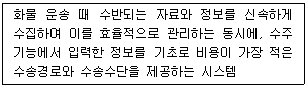
- CVO(Commercial Vehicle Operation)
- TMS(Transportation Management System)
- VMS(Vanning Management System)
- ITS(Intelligent Transport System)
- HMMS(Hazardous Material Management System)
(정답률: 29%)
50. ICD에서의 1일 컨테이너 처리 물량이 20피트형 400개, 40피트형 300개, 10피트형 200개일 때 월 25일간 작업할 경우 연간 컨테이너 처리 물량은 몇 TEU인가?
- 220,000 TEU
- 270,000 TEU
- 330,000 TEU
- 440,000 TEU
- 550,000 TEU
(정답률: 39%)
51. 철도운송 방식에 관한 설명으로 옳지 않은 것은?
- 플랙시밴 방식은 COFC의 유형이다.
- COFC가 TOFC보다 보편화되어 있다.
- 피기백 방식은 COFC의 유형이다.
- TOFC와 COFC는 트레일러 운송 여부에 따라 구분된다.
- 일반적으로 TOFC에 비해 COFC가 적재효율이 높다.
(정답률: 50%)
52. 파이프나 H형강 등 장척물의 수송이 주 목적이며, 풀 트레일러를 연결하여 적재함과 턴테이블이 적재물을 고정시켜 수송하는 것은?
- 폴 트레일러 트럭(pole-trailer truck)
- 풀 트레일러 트럭(full-trailer truck)
- 세미 트레일러 트럭(semi-trailer truck)
- 모터 트럭(motor truck)
- 더블 트레일러 트럭(double-trailer truck)
(정답률: 32%)
53. 육상운송장비에 관한 설명으로 옳지 않은 것은?
- 컨테이너 섀시(container chassis)는 세미 트레일러를 컨테이너 운송 전용으로 사용하기 위해 제작한 것이다.
- 스케레탈(skeletal) 트레일러는 컨테이너 운송을 위해 제작된 트레일러로서 전후단에 컨테이너 고정장치가 부착되어 있으며 20피트용, 40피트용 등의 종류가 있다.
- 풀(full) 트레일러는 트레일러와 트랙터가 완전히 분리되어 있다.
- 더블(double) 트레일러는 트랙터가 2개의 트레일러를 동시에 견인하여 화물을 운송할 수 있다.
- 모터트럭(motor truck)은 동력부문과 화물적재부문이 분리되어 있는 일반 화물자동차이다.
(정답률: 42%)
54. 화물자동차의 운송형태에 관한 설명으로 적합하지 않은 것은?
- 집배운송은 주로 대형 트럭을 이용하여 장거리 운송하는 것이다.
- 간선운송은 대량의 화물을 취급하는 물류거점 간에 운송하는 것이다.
- 자가운송은 화주가 직접 차량을 구입하고 그 차량을 이용하여 자신의 화물을 운송하는 것이다.
- 지선운송은 물류거점과 소도시 또는 물류센터, 공장 등까지 운송하는 것이다.
- 노선운송은 정해진 노선과 계획에 따라 운송하는 것이다.
(정답률: 50%)
55. 철도운송에 관한 설명으로 옳은 것은?
- Single wagon train : 한 개의 중간터미널을 거치는 것을 제외하고는 셔틀트레인과 같은 형태의 서비스 방식
- 셔틀 트레인 : 철도역이나 터미널에서 화차조성비용을 절감하기 위해 화차의 수 및 형태가 고정되어 있는 서비스 방식
- Y-셔틀 트레인 : 복수의 중간역 또는 터미널을 거치면서 운행하는 열차서비스 방식
- 블록 트레인 : 중ㆍ단거리 수송이나 소규모 터미널에서 이용 가능한 소형 열차서비스 방식
- 캥거루 방식 : 트레일러가 화물열차에 대해 직각으로 후진하여 무개화차에 있는 컨테이너를 바로 적재하는 방식
(정답률: 34%)
56. 철도운송의 특성을 표시한 내용으로 옳지 않은 것을 모두 고른 것은?
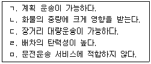
- ㄱ, ㄴ
- ㄱ, ㄷ
- ㄴ, ㄹ
- ㄷ, ㅁ
- ㄹ, ㅁ
(정답률: 35%)
57. 출발지(O)로부터 목적지(D)까지의 사이에 다음 그림과 같은 운송망이 주어졌을 경우, 그 최단경로와 관련된 설명으로 옳지 않은 것은? (단, 각 구간별 숫자는 거리(km)를 나타냄)
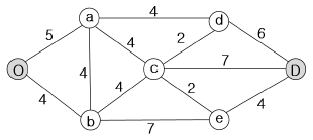
- O에서 D까지 최단거리는 14km이다.
- O에서 c까지 최단거리는 8km이다.
- O에서 e를 경유하여 D까지의 최단거리는 15km이다.
- O에서 d를 경유하여 D까지의 최단거리는 15km이다.
- O에서 b를 경유하여 D까지의 최단거리는 14km이다.
(정답률: 59%)
58. ULD(Unit Load Device)에 관한 설명으로 옳지 않은 것은?
- 신속한 항공기 탑재 및 하역작업으로 항공기의 가동률을 제고한다.
- 항공기의 적재 위치별로 내부공간이 달라도 동일한 항공기 내에서는 하나의 형태를 갖는다.
- 항공화물운송에 사용되는 컨테이너, 파렛트, 이글루 등 항공화물 탑재용구의 총칭이다.
- 외면표기(markings)는 IATA의 규정에 의해 ULD Type Code, Maximum Gross Weight, The Actual Tare Weight를 반드시 표기하도록 하고 있다.
- 항공기 간의 호환여부에 따라 Aircraft ULD와 Non-Aircraft ULD로 구분한다.
(정답률: 58%)
59. 10톤의 화물을 5 km 운송하는데 소요되는 총 수송비는 자동차가 200,000원, 철도가 150,000원이다. 철도의 경우 1톤의 화물에 대한 발착비, 배송비, 화차하역비 및 포장비가 총 250,000원이 추가로 소요될 때 화물자동차가 철도와 비교하여 경쟁 우위를 확보할 수 있는 경제적 효용거리는? (단, 채트반(Chatban) 공식을 이용할 것)
- 25 km
- 50 km
- 250 km
- 355 km
- 500 km
(정답률: 36%)
60. 항공화물운송장(AWB)과 선하증권(B/L)을 비교 설명한 것으로 옳지 않은 것은?
- 항공화물운송장은 화물수령증이고 선하증권은 권리증권의 성격을 가진다.
- 항공화물운송장은 송하인이 작성하는 것이 원칙이고 선하증권은 통상 운송인이 작성한다.
- 항공화물운송장의 발행시기는 화물인도시점이고 선하증권은 선적 후에 발행한다.
- 항공화물운송장과 선하증권은 각각 원본 2장을 발행하는 것을 원칙으로 한다.
- 항공화물운송장은 수하인을 기명식으로 기재하여 발행되고 선하증권은 통상 지시식으로 발행된다.
(정답률: 44%)
61. 다음 표와 같이 각 지점별 수요량과 공급량, 지점간 수송비용이 주어졌을 경우, 최소 총 수송비는? (단, 표 안의 숫자는 톤당 수송비용을 나타냄)
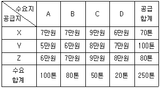
- 1,360만원
- 1,530만원
- 1,630만원
- 1,740만원
- 1,880만원
(정답률: 48%)
62. 화물자동차의 운송 효율화 방안과 관련이 없는 것은?
- 운송물량의 대형화
- 상ㆍ하차 대기 시간의 연장
- 운송장비의 전용화
- 콘솔(consolidation) 운송시스템의 구축
- 상ㆍ하차 작업의 기계화
(정답률: 57%)
63. 정기선 운임에 관한 설명으로 옳지 않은 것은?
- 종가운임 : 귀금속 등 고가품의 가격을 기초로 하여 산출되는 운임
- 특별운임 : 수송조건과는 별개로 해운동맹 측이 비동맹선과 적취 경쟁을 하게 되면 일정조건 하에서 정상 요율보다 인하한 특별요율을 적용하는 운임
- 최저운임 : 화물의 용적이나 중량이 이미 설정된 운임산출 톤 단위에 미달하는 경우 부과되는 운임
- 차별운임 : 화물, 장소 또는 화주에 따라 차별적으로 부과되는 운임
- 등급운임 : 화물, 장소 또는 화주에 관계없이 운송거리를 기준으로 일률적으로 부과되는 운임
(정답률: 36%)
64. Freight Forwarder에 관한 설명으로 옳지 않은 것을 모두 고른 것은?
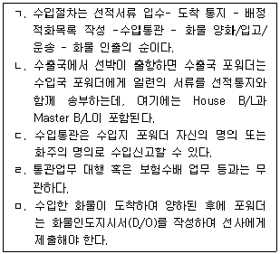
- ㄱ, ㄴ
- ㄱ, ㅁ
- ㄴ, ㄷ
- ㄷ, ㄹ
- ㄹ, ㅁ
(정답률: 25%)
65. 공동 수배송의 유형에 관한 설명으로 옳지 않은 것은?
- 배송공동형: 배송은 공동화하고 화물 거점시설까지의 운송은 개별 화주가 행하는 것
- 집화ㆍ배송공동형: 집화와 배송을 공동화하는 것
- 노선집화 공동형: 노선의 집화망을 공동화하여 화주가 지정한 노선업자에게 화물을 넘기는 것
- 공동납품 대행형: 화주의 주도로 공동화하는 것으로 가공, 포장, 납품 등의 작업을 대행하는 것
- 공동수주 공동배송형: 화주가 협동조합을 설립하여 공동수주 및 공동배송을 하는 것
(정답률: 23%)
66. 항공운송에 가장 적합한 화물은?
- 대량 화물
- 저가 화물
- 원자재 혹은 반제품
- 신속 배송을 요구하는 고가의 화물
- 부피에 비해 무거운 화물
(정답률: 65%)
67. 파이프라인 운송의 특징에 관한 설명으로 옳지 않은 것은?
- 다른 운송수단에 비해서 유지비가 저렴하다.
- 연속으로 대량운송이 가능하다.
- 컴퓨터 시스템에 의한 자동화가 가능하다.
- 유류 등을 운송하므로 친환경 운송수단이 아니다.
- 초기 시설투자비가 비교적 많이 든다.
(정답률: 42%)
68. 소화물 일관운송의 특징에 해당하지 않는 것은?
- 소형ㆍ소량화물의 운송을 위한 서비스 제공
- 운송인의 일관된 책임운송서비스 제공
- 특정 소수의 이용자들이 요청하는 화물 집화 서비스 제공
- 복잡한 도시 내 집배송에 적합한 운송 서비스 제공
- 문전에서 문전까지 일관된 운송 서비스 제공
(정답률: 44%)
69. 다음 행렬의 셀 내의 숫자는 해당 두 지점 간의 최대 운송용량(톤)을 나타낸다(예: A-C간은 운송로가 존재하고 최대 2톤의 운송이 가능하며, 숫자가 없는 셀은 운송로가 존재하지 않음을 의미함).이 경우 출발지 S에서 목적지 F로 운송할 수 있는 최대운송량은?
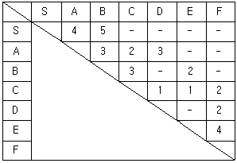
- 5
- 6
- 7
- 8
- 9
(정답률: 32%)
70. 비교적 광범위한 지역에 소량화물을 요구하는 다수의 고객을 대상으로 배송할 때에 유리한 방법으로 판매지역에 대하여 배송 담당자가 배송 트럭에 화물을 상ㆍ하차하고 화물을 수수함과 동시에 현금수수도 병행하는 방식은?
- 다이어그램(diagram) 배송 방식
- 루트(route) 배송 방식
- 단일 배송 방식
- 콘솔(consolidation) 배송 방식
- 변동 다이어그램 배송 방식
(정답률: 48%)
71. 아래의 표가 주어졌을 때 북서코너법(North-West Corner Method)에 따라 공급지와 수요지 간의 수송량을 결정하고자 한다. 이 때 총 수송비용은? (단, 표 안의 비용은 톤당 수송단가임)
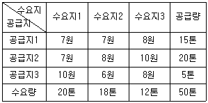
- 344원
- 356원
- 364원
- 372원
- 374원
(정답률: 47%)
72. 택배표준약관에서 규정하고 있는 내용으로 옳지 않은 것은?
- 사업자는 운송장에 인도예정일의 기재가 없는 경우에는 운송물 수탁일로부터 일반 지역은 1일, 도서/산간 벽지는 2일의 일수에 해당하는 날에 운송물을 인도한다.
- 사업자는 고객과의 합의에 따라 수하인에게 운임을 청구할 수 있는데, 이 때 수하인이 운임을 지급하지 아니할 때에는 사업자는 운송물을 유치할 수 있다.
- 사업자는 운송물 운반 도중 운송물의 포장이 훼손된 때에는 재포장을 할 수 있으며, 이 때 지체없이 고객에게 그 사실을 통지해야 한다.
- 손해배상 한도액은 운송물의 멸실, 훼손 또는 연착시에 사업자가 손해를 배상할 수 있는 최고 한도액을 말한다.
- 사업자는 수하인 불명, 수하인의 수령 거절, 수령불능의 경우에는 운송물을 공탁할 수 있다.
(정답률: 45%)
73. 배송시스템을 설계함에 있어서 배송루트의 정형화를 어렵게 하는 요인으로 가장 거리가 먼 것은?
- 정기적인 주문
- 주문량의 변화
- 수요처별 배송요청 시간의 변동성
- 불특정 다수에 대한 배송
- 교통 흐름의 변화
(정답률: 65%)
74. 다음 용어에 관한 설명으로 옳지 않은 것은?
- 형폭(breath moulded)은 선체의 제일 넓은 부분에서 측정하여 외판의 한쪽 외면에서 반대편 외면까지의 수평거리로서 도킹시에 이용되는 폭이다.
- 더니지(dunnage)는 나무조각, 고무주머니 등으로 화물사이에 끼워 화물 손상을 방지하기 위한 재료이다.
- 흘수(draft)는 선박이 수중에 잠기는 깊이를 말한다.
- 전장(length over all)은 선체에 고정적으로 붙어있는 모든 돌출물을 포함한 선수재의 맨 앞에서부터 선박의 맨 끝까지의 길이를 말한다.
- 건현(freeboard)은 배의 중앙부 현측에서 갑판 윗면으로부터 만재흘수선 마크 윗단까지의 수직 거리이다.
(정답률: 25%)
75. 택배 간선운송 중 허브 앤 스포크(Hub & Spoke)시스템의 특징이 아닌 것은?
- 노선의 수가 적어 운송의 효율성이 높아진다.
- 집배센터에 배달물량이 집중되므로 충분한 상ㆍ하차 여건을 갖추지 않으면 배송지연이 발생할 수 있다.
- 모든 노선이 허브를 중심으로 구축된다.
- 셔틀노선의 증편이 용이하여 영업소의 확대에 유리하다.
- 대형의 분류능력을 갖는 허브터미널이 필요하다.
(정답률: 50%)
76. 어느 하나의 지역에서 집화한 화물을 그 지역의 터미널로 집결시킨 후 배달할 지역별로 구분하여 배달담당 터미널로 발송하는 택배운송시스템은?
- 릴레이식 운송시스템
- Point to Point 시스템
- 절충형 시스템
- 절충형 혼합식 네트워크 방식
- 프레이트 라이너(freight liner) 방식
(정답률: 60%)
77. 카페리의 특징에 관한 설명으로 옳지 않은 것은?
- 생동물, 과일, 생선 등을 산지로부터 신속하게 직송하여 화물을 유통시킨다.
- 육상의 도로혼잡을 감소시킨다.
- 상ㆍ하역비를 절감할 수 있다.
- 컨테이너선에 비해 운임수준이 다소 낮아 매우 경제적인 운송수단이다.
- 불특정 다수를 대상으로 사람과 화물을 동시에 운송할 수 있다.
(정답률: 25%)
78. 각각의 화주가 물품을 개별 수송하는 방식에서 화주 또는 트럭사업자가 공동으로 물품을 통합 적재하는 수송방식으로 전환했을 때의 효과가 아닌 것은?
- 취급 물량의 대형화로 규모의 경제를 이룰 수 있다.
- 수배송 업무의 효율화를 기할 수 있다.
- 물류비를 절감할 수 있다.
- 차량과 시설 등에 대한 투자액을 절감할 수 있다.
- 납품 빈도의 감소로 교차배송이 증가한다.
(정답률: 54%)
79. 서울에서 대전까지 편도운송을 하는 K사의 화물차량 운행상황은 아래와 같다. 만약, 적재효율을 기존의 1,000 상자에서 1,200 상자로 높여 운행 횟수를 줄이고자 한다면. K사가 얻을 수 있는 월 수송비절감액은?
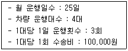
- 3,000,000원
- 4,000,000원
- 5,000,000원
- 6,000,000원
- 7,500,000원
(정답률: 36%)
80. 다음은 한국산업표준(KS T 0001)에서 정의하는 다양한 물류용어에 대한 정의이다. ㄱ ~ㅁ에 해당하는 용어가 올바르게 배열되어 있는 것은?
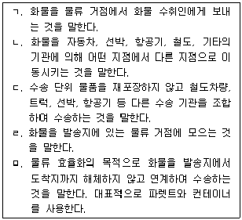
- ㄱ: 수송, ㄴ: 배송, ㄷ: 복합일관수송, ㄹ: 집하, ㅁ: 일관수송
- ㄱ: 수송, ㄴ: 배송, ㄷ: 일관수송, ㄹ: 집하, ㅁ: 복합일관수송
- ㄱ: 배송, ㄴ: 수송, ㄷ: 복합일관수송, ㄹ: 분류, ㅁ: 일관수송
- ㄱ: 배송, ㄴ: 수송, ㄷ: 일관수송, ㄹ: 집하, ㅁ: 복합일관수송
- ㄱ: 배송, ㄴ: 수송, ㄷ: 복합일관수송, ㄹ: 집하, ㅁ: 일관수송
(정답률: 48%)
3과목: 국제물류론
81. 국제물류 시장의 발전과 성장에 영향을 준 요인이 아닌 것은?
- RFID와 같은 물류 기술의 등장
- 글로벌소싱의 확대
- 전문물류업자의 출현
- 통합적 공급사슬관리의 등장
- 무역장벽의 강화
(정답률: 57%)
82. 최근의 국제물류 환경변화에 관한 설명으로 옳지 않은 것은?
- 운송의 효율성을 높이기 위하여 선박이나 항공기가 고속화, 대형화 되는 추세에 있다.
- 항공사 간의 제휴는 감소하는 추세에 있다.
- 국제물류업체간 서비스 경쟁이 심화되면서 전략적 제휴를 확대하고 있다.
- 비용절감과 수송시간의 단축을 위하여 주요 거점항만 및 공항을 중심으로 Hub & Spoke 시스템이 구축되고 있다.
- 하주에게 맞춤형 서비스를 제공하기 위하여 전문물류업체의 수가 증가하고 있다.
(정답률: 67%)
83. 수출지국에서 수출업자가 수출화물 처리시 사용하는 서류가 아닌 것은?
- Consular Invoice
- Pro - forma Invoice
- Bill of Lading
- Trust Receipt
- Packing List
(정답률: 32%)
84. 최근 물류 패러다임의 일반적인 변화 추세가 아닌 것은?
- 재고 과다형에서 재고 축소형으로의 변화
- 자가물류에서 제3자 물류로의 변화
- 고투자ㆍ자본집약형에서 저투자ㆍ노동집약형으로의 변화
- 독립ㆍ개별 물류에서 공동ㆍ통합 물류로의 변화
- 국내물류 관리에서 글로벌 SCM으로의 변화
(정답률: 54%)
85. 신항공화물운송장 계약조건(IATA Resolution 600b)을 적용한 AWB 이면약관의 일부이다. ( ) 안에들어갈 숫자로 옳은 것은?
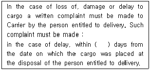
- 21
- 30
- 45
- 60
- 90
(정답률: 8%)
86. 컨테이너 리스료 부과방식이 아닌 것은?
- Rental Charge
- DPP Premium
- Interchange Ratio
- Geography Table
- Master Lease
(정답률: 7%)
87. 해상운송의 개품운송계약에 관한 설명으로 옳은 것은?
- 개품운송계약의 직접 당사자는 세관검사장과 송하인이다.
- 개품운송계약에서는 운송선박의 특징이 중요하므로 운송인은 운송개시 전이나 운송개시 후에는 운송선박을 임의로 변경할 수 없다.
- 개품운송계약은 불특정 항로를 부정기적으로 운항하는 부정기선만을 이용한다.
- 개품운송계약에서는 운송인이 다수의 송하인과 운송계약을 체결하며, 선하증권이 운송계약의 증거가 된다.
- 개품운송계약에 관한 국제조약에는 요크-앤트워프규칙(2004)이 있다.
(정답률: 36%)
88. LCL화물 60상자를 부산항에서 미국 시애틀항까지 해상운송으로 수출하려고 한다. 이 화물의 총 중량은 6,000 kg , 화물 1상자의 크기는 가로 60 cm, 세로 50 cm, 높이 50 cm이다. 화물의 Revenue Ton당 운임은 US$ 100이 적용된다. 이 때 화물의 해상운임은?
- US$ 600
- US$ 900
- US$ 1,400
- US$ 1,600
- US$ 1,800
(정답률: 43%)
89. 본선이 접안이 안되었더라도 정박기간이 개시된다는 의미를 나타내는 것은?
- whether in berth or not
- whether in port or not
- whether in free pratique or not
- sundays and holidays excepted unless used
- sundays and holidays excepted even if used
(정답률: 38%)
90. 항공화물운송장의 기능이 아닌 것은?
- 화물수령증
- 수출입신고서
- 운송계약의 증거
- 보험증서
- 유통증권
(정답률: 47%)
91. 해상운송의 부대비용에 관한 설명으로 옳지 않은 것은?
- 터미널화물처리비(THC)는 수출화물이 CY에 입고된 시점부터 선측까지 그리고 수입화물이 본선선측에서 CY 게이트를 통과하기까지 화물의 처리 및 이동에 따르는 비용이다.
- 체선료(Demurrage)는 하주가 대여해 간 컨테이너를 무료장치 시간 내에 지정된 선박회사의 CY에 반송하지 못할 경우 송하인이나 수하인이 선사에 지불하는 비용이다.
- CFS Charge는 컨테이너 하나의 분량이 되지 않는 소량화물의 적입 또는 분류작업을 할 때 발생하는 비용이다.
- 조출료(Despatch Money)는 약정된 정박기간 만료전에 선적 및 하역이 완료되었을 때 그 단축된 기간에 대해 선주가 하주에게 지급하는 비용을 말한다.
- 서류발급비(Documentation Fee)는 선사가 선하증권(B/L)과 화물인도지시서(D/O)의 발급 시 소요되는 행정비용을 보전하기 위해 부과하는 비용이다.
(정답률: 44%)
92. 정기용선계약에서 선주가 부담하는 비용이 아닌 것은?
- 선원의 급료
- 선박의 감가상각비
- 선용품비
- 선박의 연료비
- 선박보험료
(정답률: 34%)
93. 부정기선 운송에 관한 내용으로 옳지 않은 것은?
- 부정기선은 화물운송의 수요에 따라 하주가 원하는 시기와 항로에 취항하는 선박을 말한다.
- 운임은 일정한 운임률표가 아닌 물동량과 선복에 의한 시장가격에 의해서 결정된다.
- 서비스 범위의 확대와 수준을 향상시키기 위해서 해운동맹 가입이 급증하고 있다.
- 원유, 석탄, 곡물 등 살화물이 주요 운송대상이다.
- 화물의 성질이나 형태에 따라 벌크선 또는 전용선이 이용된다.
(정답률: 60%)
94. 컨테이너 보험의 특징으로 옳지 않은 것은?
- 보험대상이 되는 컨테이너는 국제표준화기구의 규격에 맞는 국제해상운송용 컨테이너이다.
- 컨테이너 보험의 담보구간 및 담보기간에는 운송기간과 장치기간만 포함되고, 수리 및 검사기간과 수리 및 검사를 위한 이동기간은 포함되지 않는다.
- 컨테이너 보험의 보상한도액은 사고당 보상한도액과 피보험회사당 총책임한도액으로 구분된다.
- 컨테이너 보험은 사고 1건당, 컨테이너 1개당 면책공제액을 정한다.
- 컨테이너 보험은 컨테이너의 수가 많고 사용빈도가 높아서 기간계약을 맺어 계약기간 중 발생할 손해를 포괄적으로 담보한다.
(정답률: 39%)
95. 양륙지에서 선사 또는 대리점이 수하인으로부터 선하증권 또는 보증장을 받고 본선 또는 터미널(CY 또는 CFS)에 화물인도를 지시하는 서류는?
- Container Load Plan
- Tally Sheet
- Equipment Receipt
- Dock Receipt
- Delivery Order
(정답률: 48%)
96. 항공사들이 설립한 순수 민간단체로 여객운임 및 화물요율 등을 결정하는 국제기구는?
- ICAO
- ICC
- ILA
- IATA
- IMO
(정답률: 40%)
97. 무역클레임 해결방법과 상사 중재에 관한 설명으로 옳지 않은 것은?
- 알선은 제3자가 개입하여 해결하는 방법으로 법적구속력은 없다.
- 소송은 공개주의가 원칙이고, 중재는 비공개주의가 원칙이다.
- 중재조항에는 준거법, 중재기관, 중재인이 포함되어야 한다.
- 중재 판정은 법원의 확정판결과 동일한 효력을 가진다.
- 중재는 단심제이다.
(정답률: 20%)
98. 항공화물사고 중 하나인 지연(Delay)의 요인이 아닌 것은?
- Non - delivery
- Cross Labelled
- Overcarried
- Shortlanded
- Shortshipped
(정답률: 10%)
99. 항공화물 운임에 관한 설명으로 옳은 것은?
- 일반화물요율은 품목분류요율이나 특정품목할인요율보다 우선하여 적용된다.
- 종가운임은 신고가액이 화물 1 kg당 US$ 20를 초과하는 경우에 부과된다.
- 혼합화물요율은 운임이 동일한 여러 종류의 화물이 1 장의 항공운송장으로 운송될 때 적용된다.
- 중량단계별 할인요율은 특정품목할인요율의 한 종류로 중량이 높아짐에 따라 요율이 점점 더 낮아진다.
- 품목분류요율은 특정구간의 특정품목에 적용되는 요율로서 보통 특정품목할인요율을 기준으로 할증ㆍ할인된다.
(정답률: 8%)
100. 해당 연도의 출하품 가운데 평균적인 중등품질을 표준으로 하여 거래목적물의 품질이 결정되는 조건은?
- Fair Average Quality
- Good Merchantable Quality
- Usual Standard Quality
- Tale Quale
- Rye Terms
(정답률: 36%)
101. 선하증권의 이면 약관에 관한 내용이다. ( )안에 들어갈 용어로 옳은 것은?
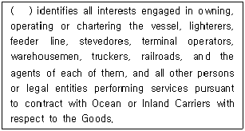
- Customer
- Merchant
- Surveyor
- Lawyer
- Subcontractor
(정답률: 20%)
102. 신용장통일규칙(UCP 600)이 적용되는 신용장에서 항공운송서류를 요구할 때 그 서류가 갖추어야 할 요건이 아닌 것은?
- 신용장에 기재된 출발공항과 도착공항의 표시가 있어야 한다.
- 운송을 위해 물품을 수령했다는 표시가 있어야 한다.
- 항공운송서류에는 서류의 발행일이 표시되어 있어야 한다.
- 신용장이 운송서류의 원본 전부(full set)를 요구하더라도 수하인용 원본만 있으면 된다.
- 운송인의 명칭(상호)을 표시하고 운송인 또는 그 대리인이 서명해야 한다.
(정답률: 48%)
103. 복합운송인의 책임체계에 관한 설명으로 옳지 않은 것은?
- 단일책임체계는 유일한 면책사유로 불가항력에 상당하는 사유만을 인정하고 있다.
- 단일책임체계는 기존의 각 운송종류별 책임한도가 달라서 그 중 어느 것을 선택할 것인지가 문제시 된다.
- 이종책임체계에서 판명손해의 경우 그 손해가 항공구간에서 발생했으면 몬트리올 협정을 적용한다.
- 이종책임체계에서 불명손해의 경우 그 손해가 해상구간에서 발생한 것으로 추정하여 헤이그 - 비스비 규칙을 적용하거나 별도로 정한 기본 책임을 적용한다.
- 이종책임체계에서는 복합운송인이 운송구간 전체에 대하여 책임을 지지만 책임 내용은 손해발생구간의 판명 여부에 따라 달라진다.
(정답률: 19%)
104. FIATA FBL 의 약관내용 중 운임 및 요금(Freight and Charge)에 관한 설명으로 옳지 않은 것은?
- 선불 또는 후불에 관계없이 클레임, 역클레임, 상계를 이유로 운임이 할인되거나 그 지급이 연기된다.
- 운임 및 기타 FBL에 기재된 모든 요금은 본 FBL에 지정된 통화 또는 포워더의 선택에 따라 발송지 또는 목적지 국가의 통화로 지급해야 한다.
- 선불운임에 대해서는 발송일의 발송지 또는 목적지의 은행 일람불당좌어음에 적용되는 가장 높은 환율이 적용된다.
- 후불운임에 대해서는 하주의 화물도착통지 접수일과 화물인도지시서 회수일의 환율 중 더 높은 환율을 적용하거나, 포워더의 선택에 따라 본 FBL발행일의 환율이 적용된다.
- 불가항력 또는 기타 사유로 인하여 이로(deviation), 지연 또는 추가 비용이 발생한 경우 포워더가 하주에게 추가운임을 청구할 수 있다.
(정답률: 11%)
1⑤. A 사는 중국의 명절을 맞이하여 특수가 기대되는 상품을 중국 내 여러 바이어에게 수출하기로 계약을 체결하였다. A 사가 선택할 수 있는 가장 적합한 컨테이너운송 방법은?
- CY to CY
- CY to CFS
- CFS to CFS
- CFS to CY
- CFS to Port
(정답률: 38%)
106. 교부받은 B/L 원본에 송하인이 배서하여 운송인에게 반환함으로써 유통성이 소멸되는 선하증권은?
- Port B/L
- Straight B/L
- Long form B/L
- Surrender B/L
- Switch B/L
(정답률: 38%)
107. 화물양륙 시 화물을 인도받는 수하인, 그 대리인 또는 하역업자가 양륙화물과 적하목록을 대조하여 본선에 교부하는 화물인수증은?
- M/R
- L/I
- S/O
- B/N
- M/F
(정답률: 8%)
108. Groupage B/L에 관한 설명으로 옳은 것은?
- FCL 화물을 선적할 때 포워더가 선사에게 발행한다.
- 일등항해사가 발행한다.
- Master B/L 이라고도 한다.
- Groupage B/L 과 House B/L은 전혀 연관성이 없다.
- 하주는 한 사람이지만 일반적으로 여러 종류의 물품을 대량으로 운송할 경우 활용된다.
(정답률: 32%)
109. 해상손해와 관련된 설명으로 옳지 않은 것은?
- Salvage Charge는 해난에 봉착한 재산에 발생할 가능성 있는 손해를 방지하기 위하여 자발적으로 화물을 구조한 자에게 해상법에 의하여 지불하는 보수이다.
- Subrogation은 피보험자가 전손보험금을 청구하기 위해서 피보험목적물의 잔존가치와 제3자에 대한 구상권 등 일체의 권리를 보험자에게 넘기는 행위이다.
- Sue and Labor Charge는 보험목적의 손해를 방지 또는 경감하기 위하여 피보험자 또는 그의 사용인 및 대리인이 지출한 비용을 말한다.
- Constructive Total Loss는 보험의 목적인 화물의 전멸이 추정되는 경우의 손해를 말한다.
- Abandonment는 Constructive Total Loss의 경우에 적용된다.
(정답률: 17%)
110. 최근 강화되고 있는 물류 보안에 관한 내용으로 옳지 않은 것은?
- 물류 보안 인증제도 시행
- 컨테이너 화물의 사전검색 강화
- 컨테이너 전자봉인장치 도입
- 선박 및 항만 시설에 대한 보안 강화
- 화물 정보의 사후신고제도 시행
(정답률: 54%)
111. 다음 용어에 관한 설명으로 옳지 않은 것은?
- Marshalling Yard는 하역작업을 위한 공간으로 Container Crane이 설치되어 컨테이너의 양하 및 적하가 이루어지는 장소이다.
- Container Freight Station은 화물의 혼재 및 분류 작업을 하는 곳이다.
- Rubber Tired Gantry Crane은 컨테이너를 야드에 장치하거나 장치된 컨테이너를 샤시에 실어주는 작업을 하는 컨테이너 이동 장비로 고무바퀴가 장착된 이동성이 있는 Crane이다.
- Reach Stacker는 컨테이너 터미널 또는 CY(ICD) 등에서 컨테이너를 트레일러에 상ㆍ하차 하거나 야드에 적재할 때 사용하는 타이어주행식의 장비이다.
- Yard Chassis는 Van Trailer의 컨테이너를 싣는 부분을 말한다.
(정답률: 47%)
112. 매매계약서에 다음 내용이 기재되어 있는 경우 신용장통일규칙(UCP 600)상 송하인의 선적이행 기간은?
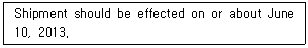
- 2013. 6. 3 ~ 2013. 6. 17
- 2013. 5. 30 ~ 2013. 6. 17
- 2013. 6. 5 ~ 2013. 6. 15
- 2013. 5. 30 ~ 2013. 6. 20
- 2013. 6. 4 ~ 2013. 6. 16
(정답률: 32%)
113. 항만시설 중 계류시설에 해당되지 않는 것은?
- Pier
- Quay
- Jetty
- Silo
- Dolphin
(정답률: 31%)
114. Incoterms® 2010에서 각 규칙별 매수인의 의무조항으로 옳지 않은 것은?
- B1 General obligations of the buyer
- B3 Contracts of carriage and insurance
- B4 Delivery
- B5 Transfer of risks
- B8 Proof of delivery
(정답률: 6%)
115. 매매계약서 물품명세란에 “Grain about 10,000 MT”라고 기재된 경우, 신용장통일규칙(UCP 600)상 매도인이 인도해야 하는 물품의 최소량은?
- 8,000 MT
- 8,500 MT
- 9,000 MT
- 9,500 MT
- 10,000 MT
(정답률: 44%)
116. 정기선의 운임형태 중 할증운임이 아닌 것은?
- IAF
- CAF
- BAF
- MEES
- FAK
(정답률: 29%)
117. Incoterms® 2010 내용의 일부이다. 다음의 ( ㄱ ), ( ㄴ ), ( ㄷ ) 안에 들어갈 규칙으로 옳은 것은?
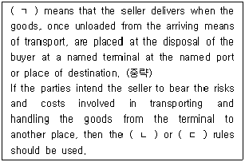
- ㄱ: DAP, ㄴ: DDU, ㄷ: DDP
- ㄱ: CFR, ㄴ: DDT, ㄷ: DAP
- ㄱ: DAT, ㄴ: DDU, ㄷ: DAP
- ㄱ: DAT, ㄴ: DAP, ㄷ: DDP
- ㄱ: CPT, ㄴ: DAP, ㄷ: DDP
(정답률: 39%)
118. 다음의 조건에서 매도인이 부담해야 하는 CIF New York 가격은?
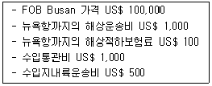
- US$ 101,100
- US$ 101,500
- US$ 101,600
- US$ 102,600
- US$ 103,100
(정답률: 40%)
119. 선박ㆍ화물 및 기타 해상사업과 관련되는 단체에 공동의 위험이 발생했을 경우 그러한 위험을 제거하거나 경감시키기 위하여 선체ㆍ장비ㆍ화물 등의 일부를 희생시키거나 또는 필요한 경비를 지출했을 때 이러한 손해와 경비를 무엇이라고 하는가?
- Particular Average Loss
- Survey Fee
- Particular Charge
- Collision Liability Loss
- General Average Loss
(정답률: 39%)
120. Incoterms® 2010의 내용에 관한 설명으로 옳지 않은 것은?
- Incoterms® 2010은 무역거래 당사자가 이를 준거 규칙으로 채택할 것을 서로 합의한 경우에만 유효하다.
- FOB, CFR, CIF 규칙에서의 위험과 비용부담의 분기점으로 본선의 난간(ship's rail)을 규정하고 있다.
- 거래규칙 중 해상 및 내륙수로운송을 위한 규칙에는 FAS, FOB, CFR, CIF가 있다.
- 거래규칙 중 모든 운송방식을 위한 규칙에는 EXW, FCA, CPT, CIP, DAT, DAP, DDP가 있다.
- Incoterms® 2010 규칙은 Incoterms 2000의 A1~A10 및 B1~B10에 각각 규정되어 있었던 종이서류와 동등한 전자메세지를 제시할 수 있다는 규정을 삭제하였다.
(정답률: 27%)